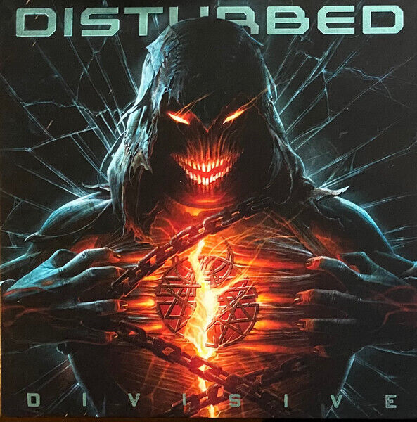

Categoría
Anectodas
-
Orígenes del Nombre: antes de que David Draiman
se uniera a la banda, eran conocidos como Brawl. Sin embargo, el
nombre originalmente iba a ser Crawl, pero tuvieron que cambiarlo
porque ya estaba siendo utilizado por otra banda.
-
Rebeldía de Draiman: David Draiman, el vocalista,
creció en una familia judía ortodoxa y su rebeldía en la
adolescencia lo llevó a ser expulsado de cinco escuelas. Esta
rebeldía se refleja en las letras de las canciones de Disturbed,
que a menudo cuestionan la existencia de un ser superior.
-
El Éxito de “The Sickness”: su álbum debut, “The
Sickness”, fue un éxito comercial principalmente debido a los
sencillos “Down With the Sickness” y “Stupify”. Este álbum ayudó a
establecer a Disturbed como una de las bandas más exitosas del
nuevo milenio.
-
Mensaje Ambiental: en su sencillo “Another Way to
Die”, Disturbed aborda el tema del calentamiento global, mostrando
su preocupación por los problemas ambientales a través de su
música.
-
La Versión de “The Sound of Silence”: la famosa
versión de “The Sound of Silence” de Simon & Garfunkel fue grabada
por Disturbed como parte de su tradición de hacer versiones. Según
David Draiman, el desafío de hacer justicia a la canción original
fue lo que los motivó a grabarla.